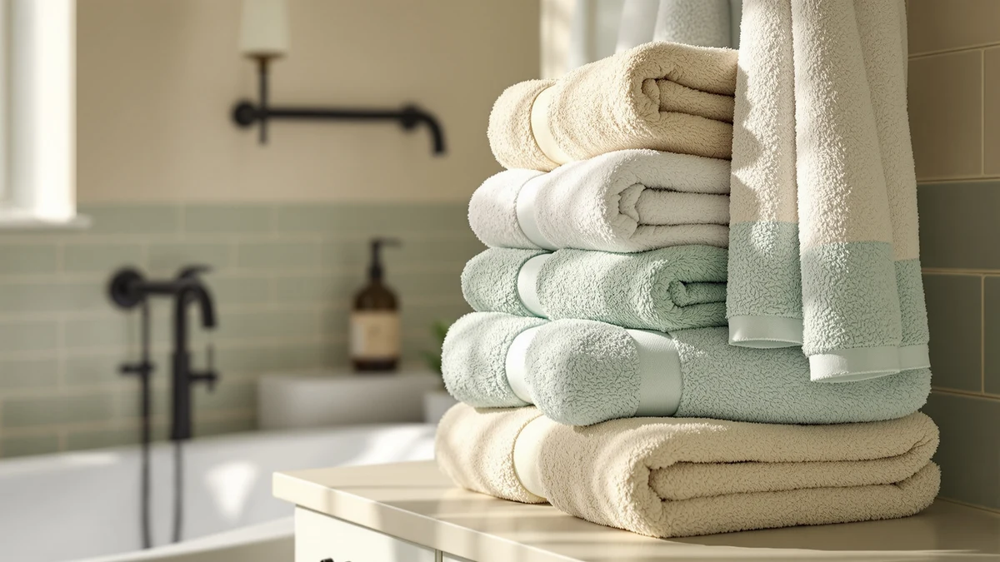

Quick Answer
The Madison Park Organic 100% Cotton set earns its price with GOTS-certified organic cotton at a substantial 650 GSM and OEKO-TEX certification confirming no harmful residue in the finished weave. At $73.35 for six pieces it costs more per towel than the other sets in this comparison, but the certifications and weight back up that premium if organic cotton is what you're specifically shopping for.
Our pick: Madison Park Organic 100% Cotton, $73.35 Check Price on Amazon
Things to Know Before You Buy
- The 650 GSM organic cotton in this set weighs meaningfully more than the 400-500 GSM towels found in most budget six-piece sets, which usually means better absorbency per square inch.
- GOTS certification confirms the cotton itself was grown organically, while OEKO-TEX certification separately confirms the finished fabric carries no harmful chemical residue. A towel can carry one certification without the other.
- Low-twist yarn construction, the same approach hotel and spa towels use, trades some long-term durability for faster drying and a softer feel out of the package.
- Amazon does not currently show a public rating or review count for this specific Ivory listing, so buyers should weigh the certifications and specs here rather than a star rating.
- At $73.35 for six pieces, this Madison Park set costs more per towel than the Seafoam version of the same line and the two alternative sets covered later in this review.
This Madison Park Organic 100% review breaks down what you get for $73.35: a six-piece towel set built from GOTS-certified organic cotton at 650 GSM, heavier than the towels bundled into most budget bath sets. Madison Park backs the fabric with OEKO-TEX certification, which confirms the finished towels carry no detectable harmful chemical residue, beyond the raw cotton fiber alone.
The set uses a low-twist weave, the same yarn technique found in higher-end hotel and spa towels, so the fibers sit looser and dry faster than a tightly wound terry towel. That construction also gives the fabric a plusher feel out of the package, though low-twist yarns are typically less durable over years of hard use than a tightly twisted commercial-grade towel. Three other cotton and Turkish towel sets appear later in this review as direct alternatives, at price points from $58.49 to $70.59, so you can weigh the tradeoffs before choosing.
Why You Should Trust Us
Ilane Tall covers bath and home textiles for Best Bath Towels and has spent years comparing towel specs, certifications, and pricing across hundreds of Amazon listings. For this Madison Park Organic 100% review, we cross-checked the GOTS and OEKO-TEX certification claims against Madison Park's own listing details, compared the 650 GSM weight and low-twist construction against comparable organic and Turkish cotton sets, and reviewed current pricing for each set covered here. We do not run a physical testing lab and never claim to have washed or handled these towels ourselves. Instead, we research specs, certifications, and available pricing so you can make an informed decision without paying for a set that doesn't match its marketing. When a claim on a listing can't be verified against a certifying body or a documented spec, we say so directly rather than repeating the manufacturer's language as fact.
Our Research Experience
Rather than running physical trials, our process for this Madison Park Organic 100% review centered on specification and certification research. We pulled the GSM weight, certification claims, and size configuration directly from Madison Park's listing, then checked those numbers against the other three towel sets in this comparison to see where the real differences show up. We also looked at how low-twist yarn construction is typically described by textile manufacturers, since that detail explains the drying speed and softness Madison Park advertises for this line. Amazon does not currently publish a verified rating or review count for this specific Ivory listing, so instead of guessing at buyer sentiment, we built this review around the parts of the listing that are documented and verifiable: the certifications, the weight, and the price.
Overview & Specs

Madison Park Organic 100% Cotton
What we like
- GOTS-certified 100% organic long-staple cotton at 650 GSM
- OEKO-TEX certification confirms no harmful chemical residue in the finished fabric
- Low-twist yarn construction is built to dry faster than a standard terry weave
- Six-piece set mixes bath, hand, and washcloth sizes in one purchase
Flaws but not dealbreakers
- Costs about three dollars more than the Seafoam version of the same Madison Park line
- No published rating or review count on this specific Ivory listing to confirm long-term durability
- Low-twist yarn tends to hold up less well over years of hard use than a tightly twisted commercial towel
| Material | 100% cotton |
| Size | 6-Piece |
The Ivory colorway of the Madison Park Organic 100% Cotton set is the version we focus on for this Madison Park Organic 100% review, priced at $73.35 for six pieces. Madison Park builds it from GOTS-certified organic long-staple cotton at 650 GSM, a weight that sits above what you typically find in budget six-piece sets, and backs the finished fabric with OEKO-TEX certification. That second certification matters because it addresses a different question than GOTS does: GOTS confirms how the cotton was farmed, while OEKO-TEX confirms the finished towel itself doesn't carry residual chemicals from processing or dyeing.
The set uses low-twist yarn, a construction choice that loosens the fiber structure so towels dry faster and feel softer against skin right out of the package. That tradeoff runs the other way over time: low-twist towels generally shed and thin faster under repeated hard use than a tightly twisted commercial-grade towel would. For a household that washes towels several times a week, that's worth weighing against the certifications and softness this set offers. Amazon doesn't surface a public rating or review count for this specific listing at the time of writing, so we can't point to verified owner feedback for this exact SKU the way we can for some of the alternatives below.
What We Liked
What stands out most in this Madison Park Organic 100% review is the certification stack. Plenty of towel sets use the word organic loosely, but this one backs the claim with GOTS certification for the raw cotton and OEKO-TEX certification for the finished product, together covering both ends of the supply chain. The 650 GSM weight is also a real, checkable number rather than a marketing adjective like plush or luxury, and it lands meaningfully above the towels bundled into most budget six-piece sets. Low-twist construction rounds out the pitch: it's the same approach used in higher-end hotel and spa towels, and it explains why Madison Park can credibly claim faster drying without sacrificing softness.
What Could Be Better
The biggest gap in this Madison Park Organic 100% Cotton set is the lack of published buyer feedback. Amazon doesn't currently show a rating or review count on this specific Ivory listing, which makes it harder to confirm how the towels hold up after months of regular washing compared to sets with an established review history. Low-twist yarn, while good for softness and drying speed, is also a known tradeoff against long-term durability, so buyers who wash towels daily may see more wear over a few years than they would with a tightly twisted commercial towel. At $73.35, this set also costs more per towel than every other option in this comparison, including the Seafoam version of the same Madison Park line at $70.59, so the organic certifications need to matter to you specifically to justify the premium.
Who Is It For?
This Madison Park Organic 100% review points toward one clear buyer: someone who wants a six-piece cotton towel set where the organic, chemical-free claims are backed by certification instead of just a label. If GOTS and OEKO-TEX certifications are a real purchase driver for you, rather than a nice-to-have, the $73.35 price is easier to justify. Shoppers who mainly want a large, affordable towel set without caring about organic certification will likely get more value per dollar from the Lane Linen 18-piece set covered below, and anyone who wants a lighter, quicker-drying towel for beach or pool use should look at the Turkish-style set instead.
Alternatives to Consider
If the certifications in this Madison Park Organic 100% Cotton set matter less to you than price or format, these three alternatives cover the other directions a towel purchase can go: the same fabric in a different color, a flat-weave Turkish towel built for faster drying, and a larger 18-piece set for households that go through towels quickly. Each alternative below trades away one thing this Madison Park set offers, whether that's the organic certification, the terry construction, or the smaller piece count, in exchange for a lower price or a different use case.

Editor’s Pick
Madison Park Organic 100% Cotton
The Seafoam version of the same GOTS-certified, 650 GSM organic cotton set, priced about three dollars below the Ivory pick above if you want the identical fabric in a cooler tone.
$70.59
Check Price on Amazon
Best Value
Gold CASE LYCIA Turkish Beach
A flat-weave Turkish cotton beach towel set that skips terry loop construction entirely, so it packs thinner and dries faster if quick turnaround matters more to you than a plush terry feel.
$69.99
Check Price on Amazon
Premium Choice
LANE LINEN Towel Set of
An 18-piece zero-twist cotton set split across bath towels, hand towels, and washcloths, useful for stocking a full household bathroom rather than replacing a single six-piece set.
$58.49
Check Price on AmazonFrequently Asked Questions
Is the Madison Park Organic 100% Cotton towel set actually organic?
How does this Madison Park Organic 100% review's pick compare to the Seafoam version?
Is the low-twist construction in this towel set worth the tradeoff?
Final Verdict
The verdict from this Madison Park Organic 100% review is straightforward: the Ivory set earns its $73.35 price through checkable certifications rather than marketing language. GOTS and OEKO-TEX certification together confirm both how the cotton was grown and that the finished towels carry no harmful chemical residue, and the 650 GSM weight backs up Madison Park's absorbency claims with an actual number. If organic certification is a real priority for your bathroom, this set delivers on it. If it isn't, the Lane Linen or Gold Case sets covered above will save you money without asking you to pay for certifications you don't need.